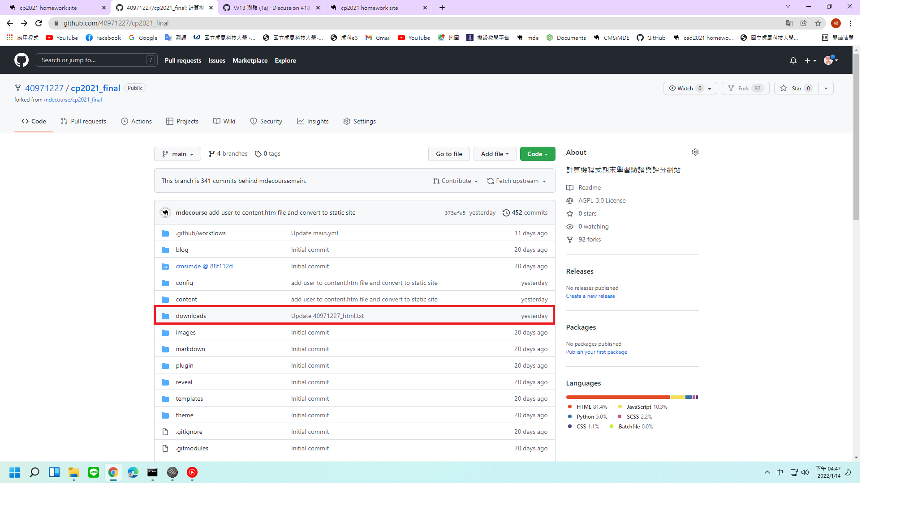

note <<
Previous Next >> 已解決問題
上課筆記
建立倉儲

開啟作業網站方法
作業網站密碼
無法cms的原因
什麼是 pull request
Github/Bitbucket 裡面有很多功能，可能不是每個人都用過，而不同團隊的文化也不同，最近恰好遇到需要用這個功能，於是看了一下這個功能的用法。
當開發者完成一個功能時，亦即，在一般情況下，開發者在一個他專屬的分支上進行功能開發，然後完成該功能。
這時，開發者需要將這個功能合併回 master 分支，但他不可能再沒有被檢查過的情況下做合併，因此需要該專案的維護者或是其他工程師一起合作檢查。
因此，開發者需要告知其他人，請他們來檢查，甚至在檢查後，大家一起討論並且修改不足或是錯誤的地方，最後才合併。
Pull Request 就是為此而存在。
- 通知：告知相關人士一起來檢查
- 討論：讓討論不分散，集中在某個畫面上，致使訊息不流失
- 修改：進行錯誤或是改善，根據討論而做出的修改 (follow-up commit) 會標示在這邊
note <<
Previous Next >> 已解決問題